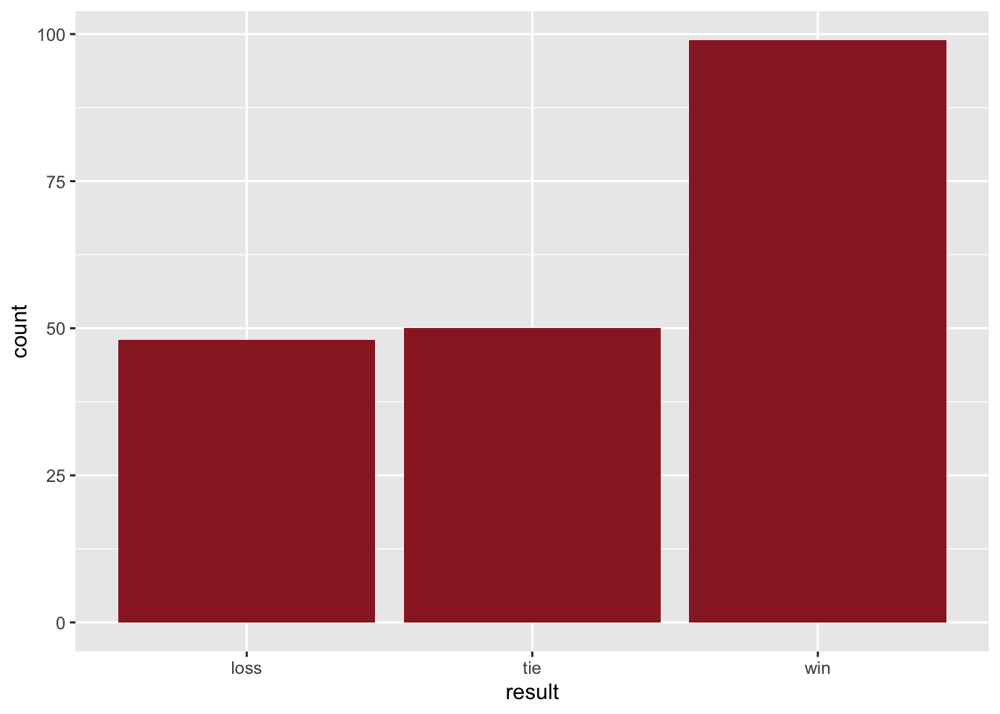
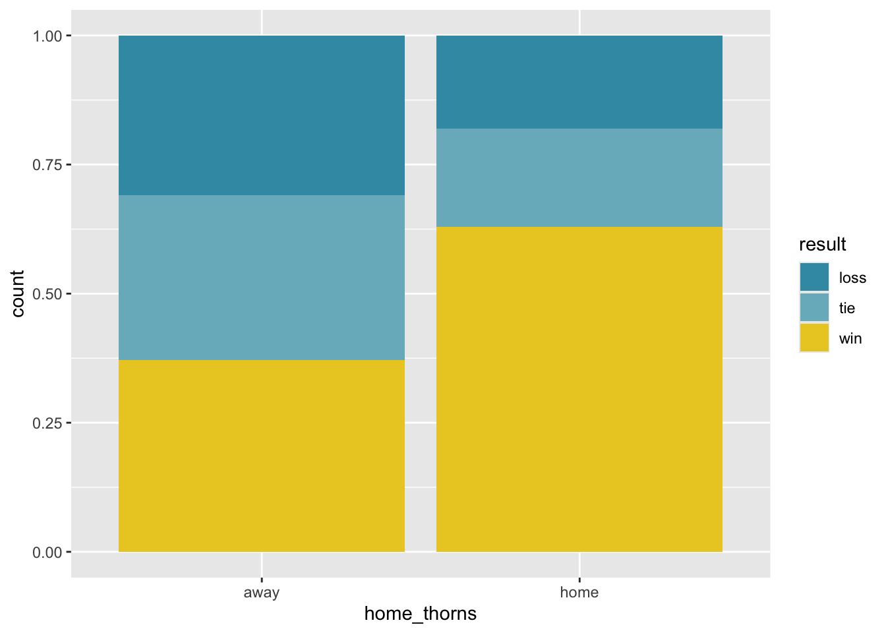
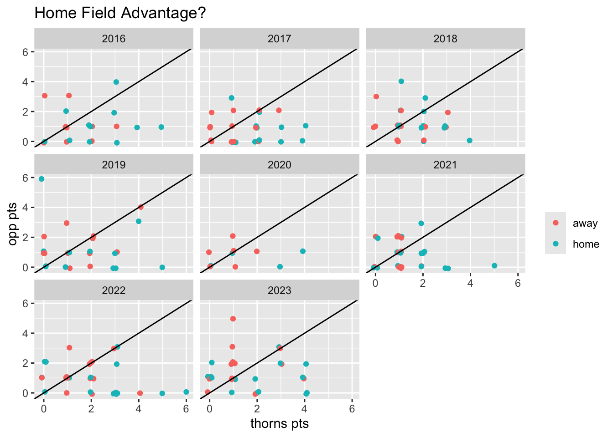

library(tidyverse)
library(wesanderson)Lab 02 - Portland Thorns
In this lab we will be working with data from 2016-23 of the Portland Thorns, a highly successful National Women’s Soccer League (NWSL) team located in Portland, OR. Our goals include
- visualizing categorial data
- investigating associations between categorial data
- investigating associations with numerical data
We will also see some new ways of working with data with R.
1 Packages and Data
There’s nothing in this section that you actually need to do – just read through to make sure you understand what’s happening.
The tidyverse package includes many of the R commands we need to work with data.
The data for this lab was sourced from the nwslR package on Github. The code below reads this data from a csv file and then assigns the name thorns to the dataset.
thorns <- read_csv("thorns.csv")The thorns dataset has 197 rows and 9 variables. The observations are all the Thorns games up through the 2013 season. The variables are as follows:
| Variable | Descripton |
|---|---|
game_id |
An unique ID for the game |
game_date |
Game date |
home_team |
Name of the home team, abbreviated |
away_team |
Name of the away team, abbreviated |
opponent |
The team Thorns played against |
home_pts |
Number of points by the home team |
away_pts |
Number of points by the away team |
result |
Result of the game for Thorns (win, loss, tie) |
year |
Season (2017-2023) |
2 Thorns results
In this section we want to start looking at the categorical variable results which records the result (win, loss, or tie) for each game.
Task 1
Create a bar plot for the variable result. Additionally, calculate the numbers of wins, losses, and ties. Hint: in previous activities, we have used the count() function to do this kind of calculation.
ggplot(thorns, aes(x=result)) +
geom_bar(fill = "#99242B")
Task 2
One question we might ask about the Thorns is whether there’s a difference in how often they win if we control for whether they’re playing at home or away.
To help us investigate this question, we will create a new variable that captures whether the game was played at home or away. We will call this variable home_thorns and give it the value “home” if Thorns are the home team and “away” if Thorns are the away team. Here is the code that does this:
thorns <- thorns |>
mutate(home_thorns = if_else(home_team == "POR", "home", "away"))There are two things to notice here:
The use of the assignment operator (
<-) to assign the resulting data frame tothorns, thus overwriting thethornsdataset to contain this new column. We do this because we will use this new variable,home_thorns, in a subsequent exercise.The use of a new function,
if_else()to determine whether the game is played at home or away.home_team == "POR"finds all rows where the home team is Portland.- If the home team is Portland, then we set the value of
home_thornsto “home”. - Otherwise (else) Thorns must be the away team and we set the value of
home_thornsto"away".
thorns |>
count(home_thorns)# A tibble: 2 × 2
home_thorns n
<chr> <int>
1 away 97
2 home 100Task 3
Now let’s create a visualization that displays the relationship between home_thorns and result. Since we’re now looking at two categorical variables, we now want a stacked bar graph.
ggplot(thorns, aes(x=home_thorns, fill = result) ) +
geom_bar(position = "fill") +
scale_fill_manual(values = wes_palette("Zissou1", n=5))
# scale_fill_manual(values = c("black", "#EE202F", "#99242b"))Then, let’s calculate the proportions of home and away games that the Thorns won.
thorns |>
count(home_thorns, result)# A tibble: 6 × 3
home_thorns result n
<chr> <chr> <int>
1 away loss 30
2 away tie 31
3 away win 36
4 home loss 18
5 home tie 19
6 home win 63thorns |>
count(result, home_thorns) |>
group_by(home_thorns) |>
mutate( pct = n / sum(n)) |>
pivot_wider(id_cols = home_thorns, names_from = result , values_from = pct )# A tibble: 2 × 4
# Groups: home_thorns [2]
home_thorns loss tie win
<chr> <dbl> <dbl> <dbl>
1 away 0.309 0.320 0.371
2 home 0.18 0.19 0.63 3 Thorns points
So far we have focused on whether the game was at home or away and whether the Thorns won – both of which are categorical variables. Now let’s look at the number of goals that the Thorns score, a numerical variable, and whether that might be associated with where they play.
Unfortunately, we don’t actually have a variable (yet) whose value is the number of goals the Thorns score! But we do have two variables that track the scores of the home and away teams. And earlier, we created a variable that tracks whether the Thorns were the home team or away each game. So we again create a new variable for the quantity we’re interested in.
thorns <- thorns |>
mutate(thorns_pts = if_else(home_team == "POR", home_pts, away_pts))Now that we have a variable for goals scored by Thorns each game we can calculuate its average (mean) value:
thorns |>
summarize(mean = mean(thorns_pts))# A tibble: 1 × 1
mean
<dbl>
1 1.65Task 5
thorns |>
group_by(home_thorns) |>
summarize(mean = mean(thorns_pts))# A tibble: 2 × 2
home_thorns mean
<chr> <dbl>
1 away 1.25
2 home 2.05thorns |>
group_by(result) |>
summarize(mean = mean(thorns_pts))# A tibble: 3 × 2
result mean
<chr> <dbl>
1 loss 0.562
2 tie 1.12
3 win 2.45 Task 6
The code chunk below extends our investigation by looking at average number of goals scored when we control for both home_thorns and result.
thorns |>
group_by(home_thorns, result) |>
summarize(mean = mean(thorns_pts))# A tibble: 6 × 3
# Groups: home_thorns [2]
home_thorns result mean
<chr> <chr> <dbl>
1 away loss 0.5
2 away tie 1.23
3 away win 1.89
4 home loss 0.667
5 home tie 0.947
6 home win 2.78 Task 7
For our last task, we want to visualize our investigation into number of goals scored with some scatterplots. First, we build on the thorns data frame by again creating some new variables to help us keep track of the points scored by the Thorns opponent in each game. The code below creates two new variables:
total_pts: Sum of points scored by both teams, i.e.home_pts + away_pts.opponent_pts: Points scored by the opposing team, i.e.,total_pts - thorn_pts.
thorns <- thorns |>
mutate(
total_pts = home_pts + away_pts,
opponent_pts = total_pts - thorns_pts
)Finally, we create some scatterplots to do the following:
- graph
opponent_pts(y) vs.thorns_pts(x) - Color the scatter plot by whether Thorns are home or away.
- Represent the data with “jittered” points wth
geom_jitter(). - Overlay a \(y = x\) line with
geom_abline(). - Facet by
year(i.e. create a separate graph for each season).
Fill in the blanks in the blanks with the appropriate variable names. After producing the scatterplots, answer the questions below.
ggplot(thorns, aes(x = thorns_pts, y = opponent_pts, color = home_thorns)) +
geom_jitter(width = 0.1, height = 0.1) +
geom_abline(slope = 1, intercept = 0) +
facet_wrap(~ year) +
labs(
x = "thorns pts",
y = "opp pts",
title = "Home Field Advantage?",
color = ""
)
4 Acknowledgements
This assignment was adapted from a similar exercise by Dr. Mine Çetinkaya-Rundel. Dataset was cleaned and prepared by Chris Hallstrom.
library(infer)
chisq_test( thorns, home_thorns ~ result)# A tibble: 1 × 3
statistic chisq_df p_value
<dbl> <int> <dbl>
1 13.2 2 0.00136